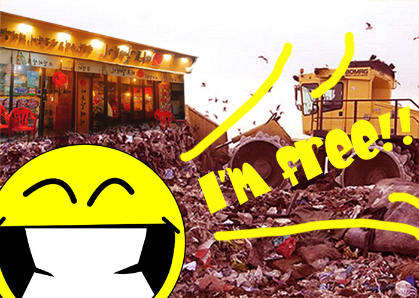

중학교 1학년 때 친구의 동생이 6살이었을 당시 아무런 생각도 없이 친구의 동생 초등학교 졸업식 때 가주겠다는 진심이 아닌듯한 약속을 했는데 이번에 정말로 졸업식에 갔었다. 친구네 부모님도 저의 부모님도 진짜 가느냐고 계속 물어보면서 믿지 못했지만 나는 진짜 갔다. 나도 내가 왜 갔는지 모르겠다.

서울에서 방학 동안 할 알바를 구해서 마포갈매기에서 일하게 되었는데 사장님이 한경대에 다닌다고 하니까 자신이 옛날에는 한경대 후문쪽에서 장사를 했다고 했다. 게다가 한경대학교를 졸업하셨다고 해서 여기서 일 할 운명이라고 생각했는데 일이 너무 별로인 관계로 운명은 한 번이면 충분한 것 같다.
